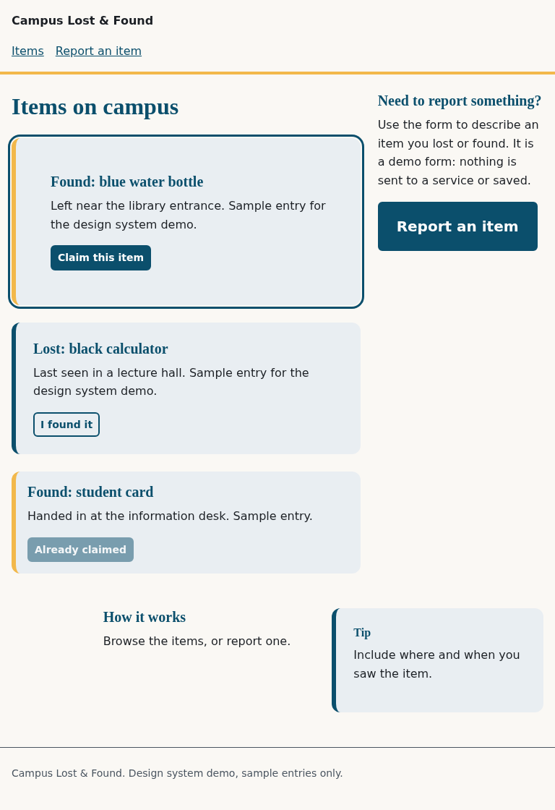
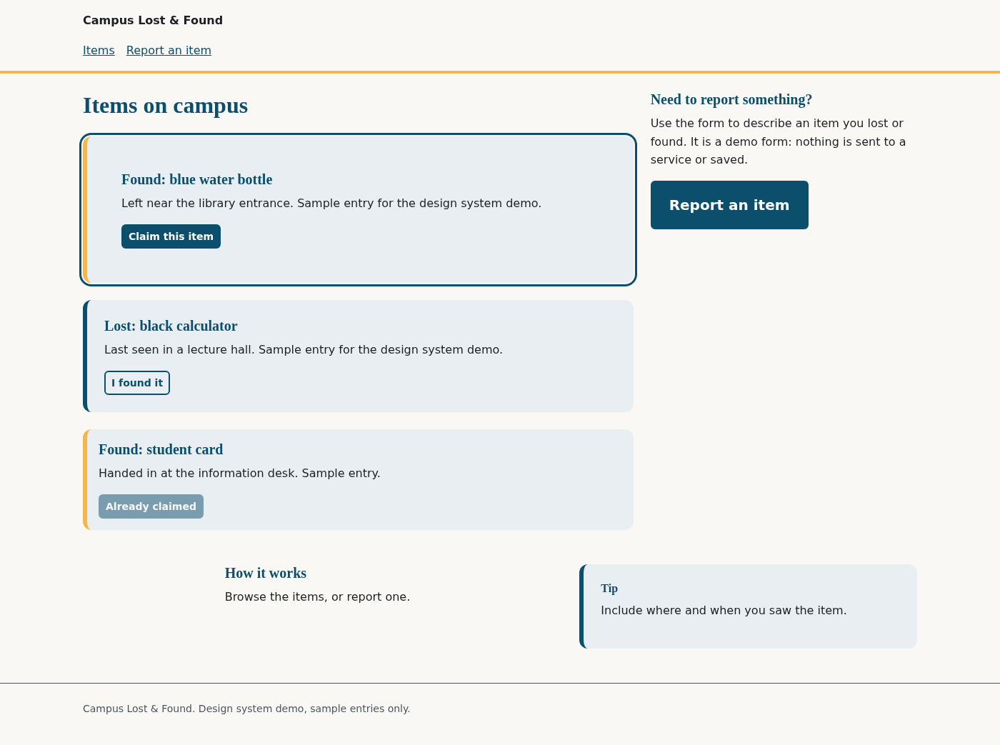
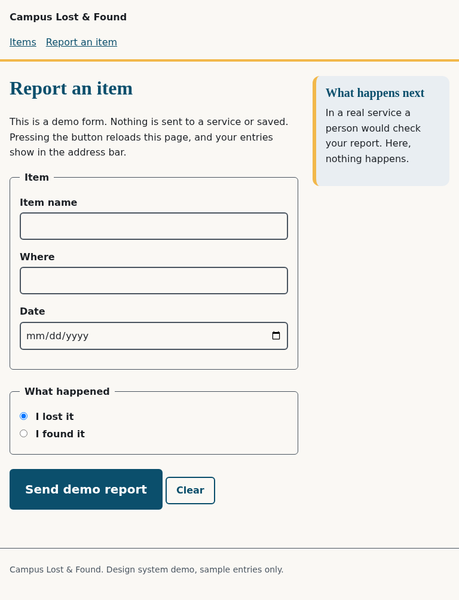
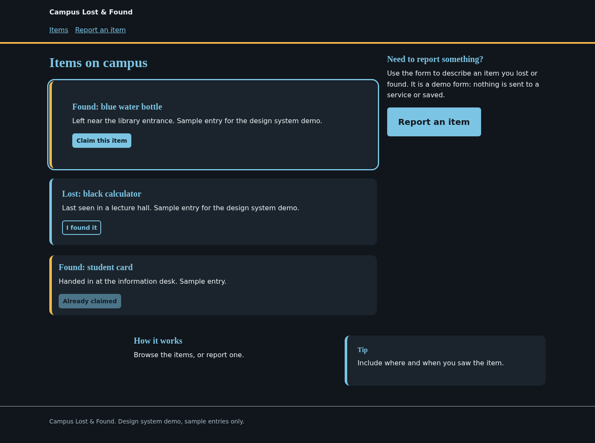

Chapter 11 project, Web Design and Development. Service: a campus lost and found. Two proof pages: index.html (items) and report.html (a demo report form: no service receives it and nothing is saved; the page just reloads with the entries in the address bar). This is the revised version: tokens renamed by role, ratios recomputed, card state fixed, reduced motion fixed, base layer fully documented. Colours, layout and page content are unchanged.
This project was built with the help of an AI assistant (Instinct), at the student's request. The assistant wrote the CSS files, the two HTML pages, the specification sheets, the governance note, the tests and this report, and ran the checks in section 8 and the validators. It chose the service, the colour values and the names. The student must read every file, open the site in VS Code, and be able to explain any line. Sections 9 and 10 each have a clearly marked place for the student's own words, left empty.
Who did what.
| Performed by the AI assistant | Performed by the student | Not performed by anyone |
|---|---|---|
| All code and documents. Every test T1 to T20 in section 8, run on the final files in headless Chrome 157 and with scripts, plus the W3C HTML and CSS validators. The screenshots in section 7. | Only what his own screenshots in earlier sessions showed: the index and report pages on his machine at desktop width, the report at 320 px, the index at 320 and 768 px, the skip link appearing on Tab, an empty required field being blocked with a dashed border, and the browser Console showing no red errors. These were the earlier build, not re-run on this revision. Nothing else. | Screen reader. A second browser (Firefox, Safari). A real touch device. Enter on the skip link and the night theme on the student's machine. Any student-written reflection or temptation entries (empty, sections 9 and 10). |
Every token is named for its role. Every colour pair the system uses carries its measured contrast ratio in a comment in tokens.css (the one file where comments are kept, because the brief asks for ratios in comments; main.css has none). Ratios use the WCAG relative luminance formula, (L1 + 0.05) / (L2 + 0.05), computed by a script from the hex values, not copied. Section 8, T11 and T10 check them.
| Old name | New name | Value | Role |
|---|---|---|---|
| --font-size-1 | --font-size-small | 0.875rem | Small note, footer, small button |
| --font-size-2 | --font-size-body | 1rem | Body text, h3 |
| --font-size-3 | --font-size-subheading | 1.25rem | h2, large button label |
| --font-size-4 | --font-size-page-heading | 2rem | h1 |
| --space-1 | --space-compact | 0.5rem | Tight gaps: control padding, label gap, small card/button padding base |
| --space-2 | --space-base | 1rem | Default gap, paragraph margin, small card padding |
| --space-3 | --space-card | 1.5rem | Default card padding, grid gap |
| --space-4 | --space-section | 3rem | Large card padding, space above the footer |
| --radius-1 | --radius-control | 0.375rem | Buttons, inputs, fieldset |
| --radius-2 | --radius-card | 0.75rem | Cards |
The spacing scale is the same four values; nothing was added. Utility class names (mt-2, mt-3, mb-2, mb-3) are unchanged so the pages needed no edit: mt-2 and mb-2 use --space-base, mt-3 and mb-3 use --space-card. One token was removed: --duration-base (240ms) was defined but used nowhere, and the governance note forbids unused tokens. Colour, font family, line-height and --duration-fast names were already role names and are unchanged.
| Token | Value | Role | Measured pairs (day) |
|---|---|---|---|
| --color-paper | #FAF8F4 | Page background, input background | ink 15.61:1, muted 7.17:1, brand 8.43:1, focus 8.43:1 on paper. Paper vs surface 1.10:1: decorative layering, no meaning |
| --color-ink | #1B1F24 | Body text; pressed button background | 15.61:1 on paper, 14.18:1 on surface. Pressed button, paper on ink: 15.61:1 |
| --color-muted | #4A5560 | Secondary text, form and fieldset borders, default card stripe | 7.17:1 on paper, 6.51:1 on surface (borders need 3:1) |
| --color-surface | #E9EEF2 | Card background | ink 14.18:1, muted 6.51:1, brand 7.65:1, focus 7.65:1 on surface |
| --color-brand | #0B4F6C | Headings, links, buttons, invalid border, featured card outline | 8.43:1 on paper, 7.65:1 on surface |
| --color-brand-text | #FFFFFF | Text on a brand background | 8.94:1 on brand |
| --color-accent | #F2B84B | Decorative only: header rule, found-card stripe | 1.69:1 on paper, 1.53:1 on surface: below 3:1, so it is never the only signal. The card heading says Found or Lost. Ink on accent 9.25:1 (no text sits on it today) |
| --color-focus | #0B4F6C | Focus ring | 8.43:1 on paper, 7.65:1 on surface (3:1 needed for non-text) |
Only token values change, under [data-theme="night"]. No component rule changes.
| Token | Night value | Measured pairs (night) |
|---|---|---|
| --color-paper | #10161C | ink 15.44:1, muted 8.80:1, brand 9.42:1, focus 9.42:1. Paper vs surface 1.16:1 (decorative layering) |
| --color-ink | #E8EDF1 | 15.44:1 on paper, 13.34:1 on surface. Pressed button, paper on ink: 15.44:1 |
| --color-muted | #A9B6C1 | 8.80:1 on paper, 7.60:1 on surface |
| --color-surface | #1B242C | ink 13.34:1, muted 7.60:1, brand 8.13:1, focus 8.13:1 |
| --color-brand | #7CC4E3 | 9.42:1 on paper, 8.13:1 on surface |
| --color-brand-text | #10161C | 9.42:1 on brand |
| --color-focus | #7CC4E3 | 9.42:1 on paper, 8.13:1 on surface |
| --color-accent (not overridden) | #F2B84B | Decorative only. 10.17:1 on paper, 8.79:1 on surface; still never the only signal |
Other tokens: --font-body (system-ui stack), --font-heading (Georgia stack), --line-height-body 1.6, --duration-fast 120ms. Not colour pairs, so no contrast ratio applies.
Files. Two stylesheets: css/tokens.css (the token layer) and css/main.css (base, grid, components, utilities as @layer blocks). main.css has no comments; the reasons are written here: section 2 gives what each base rule replaces and why, section 3 justifies the breakpoint, section 4 explains the components and the utilities limit.
"Browser default" below means the user-agent stylesheet. Values marked (measured) were read with getComputedStyle on a page with no author CSS in headless Chrome 157 on Linux (fonts differ by operating system; other browsers were not measured). Where a rule adds behaviour that no browser default has, the row says New design-system behaviour and does not claim to replace anything.
| Rule | What it replaces in the browser default | Why the replacement is needed |
|---|---|---|
| *, ::before, ::after { box-sizing } | Replaces content-box, the default on body and text inputs (measured). select, button and checkbox are already border-box in Chrome. | Width then includes padding and border, so 100%-wide inputs and the 12-column grid cannot overflow. |
| body: margin, background, color, font-family, font-size, line-height | Replaces margin 8px, transparent background with black text, Times New Roman 16px, line-height normal (all measured). | Page background, text colour, font and line height come from tokens; spacing starts at zero and comes from the scale. |
| h1, h2, h3: margin, font-family, color, line-height; h1/h2/h3 sizes | Replaces em-based margins (h1 21.44px, h2 19.92px, h3 18.72px), Times New Roman, black text, line-height normal, and the sizes 32px, 24px, 18.72px (measured). The bold weight is kept: the browser default 700 is not replaced. | Sizes and heading colour come from tokens. Heading colour (brand) is New design-system behaviour: browsers do not colour headings. |
| p: margin | Replaces margin 16px top and bottom (measured). | Only a bottom margin from the scale, so spacing is predictable and does not stack with the heading margin. |
| a: color | Replaces link blue (0,0,238), and purple for visited links. The underline is kept (not replaced). | Link colour is a token with a measured contrast ratio, in day and night. |
| :focus-visible: outline | Replaces the browser focus ring, which looks different in every browser. | One known ring, 3px solid in the focus token, offset 2px, ratio 8.43:1 on paper day and 9.42:1 night. |
| ul: margin, padding, list-style | Replaces margin 16px, padding-left 40px and disc bullets (measured). | Lists on these pages are the navigation row. Caveat, not tested here: some screen readers (Safari with VoiceOver) can stop announcing a list when list-style is none. |
| img: max-width, height | Replaces max-width none (measured): an image can be wider than its container. | Never wider than its container, keeps its ratio. No page uses an img yet, so this rule is written but not exercised by the proof pages. |
| fieldset: margin, padding, border, border-radius | Replaces a 2px groove border, padding about 5.6px 12px, and a 2px side margin (measured). Not replaced: the browser min-inline-size of min-content on fieldset. | One group style from tokens. A bottom margin of --space-card is New design-system behaviour (the default is 0). |
| legend: padding, font-weight | Replaces padding-inline 2px (measured). | Padding from the scale. Bold (700) is New design-system behaviour: the browser default legend weight is 400 (measured). |
| input, select, textarea: display, width, margin-bottom, padding, font, color, background, border, border-radius | Replaces inline-block, a fixed default width (177px on text input), a 2px inset border, padding 1px 2px, 13.33px Arial, black on white (measured). | They use the site font, colours and radius, with a 2px border at 7.17:1 (3:1 needed). display:block, width:100% and margin-bottom are New design-system behaviour: one field per line, full width. |
| input[type=checkbox], input[type=radio]: display, width, margin | Browser default is inline-block, 13px wide, margin 3px 3px 3px 4px (measured). | The rule above made every input block and full width. This rule sets display back to inline-block and width to auto, so a box or radio sits beside its label text, and sets the margin to 0 on the right with --space-compact. It restores two browser defaults; it is not a new look. |
| label: display, margin-bottom, font-weight | Replaces display inline, no margin, weight 400 (measured). | A block label sits above its field. The weight 600 and the small bottom margin are New design-system behaviour. Wrapping labels (around a radio) also work. |
| input/select/textarea :user-invalid | No browser default: browsers draw nothing for an invalid field (Chrome shows only a message bubble on submit). New design-system behaviour. | After the user has edited a field and left it, the border turns brand colour and dashed. The dashed style means the state is not shown by colour alone. :user-invalid is used, not :invalid, because :invalid matches before the user has typed anything. Tested in Chrome only. |
| a, input, select, textarea: transition | No browser default: colour changes are instant (transition 0s, measured). New design-system behaviour. | Soft colour change using --duration-fast (120ms), colour and border colour only. |
| @media (prefers-reduced-motion: reduce) | No browser default. New design-system behaviour: it turns the transition off for a, input, select and textarea. | Respects the user setting. It is in the base layer, so it cannot cancel the .btn transition, which is declared in the components layer, a later layer. The .btn override is therefore written in the components layer (section 4). |
| header: padding-block, border-bottom | Replaces a plain block with no padding or border (measured). | Spacing from the scale and a 0.25rem accent rule. The rule is decorative: the accent is not a signal. |
| footer: margin-top, padding-block, border-top, color, font-size | Replaces a plain block with no padding or border (measured). | Separates the footer from the page; muted small text (7.17:1). |
| nav ul: display, flex-wrap, gap | Replaces a vertical block list (measured display block). | The links sit in one wrapping row with a gap. New design-system layout behaviour. |
| .skip-link, .skip-link:focus | No browser equivalent. New design-system behaviour: a class, not an element. | Moved off-screen (top -4rem, absolutely positioned) until it receives keyboard focus, then it becomes a static block at the top, which moves the content down while it is focused. It is the one class rule in the base layer: no element exists to hang it on, and every page needs it. |
Twelve columns with CSS Grid: repeat(12, minmax(0, 1fr)). Spans: col-12, col-md-4, col-md-6, col-md-8, col-md-10, col-md-12. One offset: offset-md-2. One nested row: inside the section on index.html. One breakpoint, 48em (768px). All unchanged in this revision.
Why 48em. Both pages use the same layout: main takes 8 columns and the aside (a heading and the Report an item button, or a card) takes 4. Measured in headless Chrome 157 at 768 px: main 483 px wide, aside 229 px (about 14.3rem), side by side. At 1400 px: main 771 px, aside 373 px. Below 48em the aside would get narrower than about 14rem, so the columns stack (at 320 px both are 288 px wide). The breakpoint is chosen from the content actually built, and no other breakpoint was tried; 14rem is a design choice, not a tested limit.
Offset and nested row, measured. At 768 px the offset section starts at x=143 (two of twelve columns in from the content edge at 16) and its two nested columns are 293 px wide at x=143 and x=459. At 1400 px the section starts at x=315 and the nested columns are 473 px wide at x=315 and x=811. At 320 px everything stacks at x=16, 288 px wide.
Components: .card and .btn, each with two variants, one size axis and states read from the DOM. Utilities, four, all from the spacing scale: mt-2, mt-3, mb-2, mb-3. Layer order, declared once at the top of main.css (tokens.css is a separate file, linked before main.css): @layer base, grid, components, utilities;. No !important anywhere.
Card state and aria-current (changed). The first card on index.html was marked aria-current="true" only to get its outline. aria-current tells assistive technology that an element is the current item in a set (a page in navigation, a step in a process). This card is a featured entry, not the current item of a set, so a screen reader could announce something false. The visual state now comes from a plain DOM attribute with no accessibility meaning: data-state="featured". The look is the same (the day screenshots are byte-identical to the earlier ones), and the outline now uses --color-brand (the same value as the focus colour) so it is not a focus token. aria-current is kept only where it is true: aria-current="page" on the current navigation link in both pages (index.html: Items; report.html: Report an item). No CSS styles aria-current.
Reduced motion for .btn (fixed). Before: with prefers-reduced-motion: reduce emulated, the earlier index page still had a .btn transition of 0.12s, while links were 0s (measured on the earlier files). The base-layer rule could not reach it because the .btn transition is declared in the components layer, which comes after base in the declared layer order and so wins for normal declarations. Fix: @media (prefers-reduced-motion: reduce) { .btn { transition: none; } } placed in the components layer right after the .btn rule. No !important and no change to the layer order. Test T14.
COMPONENT .card
owner: web team
-----------------------------------------------------
REQUIRED MARKUP
<article class="card">
<h2> ... </h2> one heading, level from the outline
<p> ... </p> one or more blocks of content
</article>
VARIANTS
.card--found accent stripe, for items someone found
.card--lost brand stripe, for items someone lost
SIZES (one axis)
(default) padding --space-card
.card--sm padding --space-base
.card--lg padding --space-section
STATES (read from the DOM)
[data-state="featured"] 3px brand outline, offset 2px. A visual
state only: it does not say "current item"
(no hover state: the card is not a control; no motion on the card)
TOKENS
--card-surface --card-accent --card-pad (all set inside .card)
From the system: --color-surface, --color-accent, --color-brand,
--color-muted, --space-*, --radius-card
DO NOT
nest a card in a card; style .card from a page stylesheet;
add a third variant; rely on the stripe colour alone: the heading
says Found or Lost; use aria-current or any ARIA attribute only to
get the featured look
COMPONENT .btn owner: web team ----------------------------------------------------- REQUIRED MARKUP <button class="btn btn--primary" type="button"> label </button> or <a class="btn btn--primary" href="..."> label </a> for navigation VARIANTS .btn--primary filled brand background, brand-text label .btn--outline transparent background, brand label and border SIZES (one axis) (default) padding --space-compact / --space-base .btn--sm smaller padding and --font-size-small .btn--lg larger padding and --font-size-subheading STATES (read from the DOM) :disabled opacity 0.5, not-allowed cursor [aria-pressed="true"] ink background, paper label (toggle buttons) :focus-visible from the base layer Motion: colour transition --duration-fast; none when the user asks for reduced motion (rule in the components layer) TOKENS --btn-bg --btn-text --btn-pad-y --btn-pad-x (all set inside .btn) From the system: --color-brand, --color-brand-text, --color-ink, --color-paper, --space-*, --radius-control, --duration-fast DO NOT use a div as a button; style .btn from a page stylesheet; add a third variant; set aria-pressed on a button that is not a toggle
To add a token, open tokens.css and name it for its role, not its look: --color-warning, not --color-orange, and --space-card, not --space-3. Put the value in :root. If the night theme needs another value, add it in [data-theme="night"]. For every colour pair the token will sit on, compute the contrast with the WCAG formula and write the ratio in a comment beside it, for day and night. Mark a decorative-only pair as decorative. Do not add a token that nothing uses. To add a component, write a one-page specification sheet first: required markup, variants, sizes, states, tokens, what not to do. Then add its rules to the components layer in main.css, using only var() values. States come from the DOM: :disabled, [aria-pressed], [data-state]. Never use an ARIA attribute only for looks. Put a reduced-motion override after the transition it cancels, inside the same layer. A fifth utility is never added: if someone asks for one, a component is missing. The layer order is declared once, at the top of main.css. Never use !important: change the layer or the token. Before merging, search the stylesheets for literal colours outside tokens.css and for the word important, and test at 320, 768 and 1400 pixels.
Both pages are built only from the system: no style attribute, no style tag, no page stylesheet (T1, T3, T5). All screenshots below were regenerated from the final files in headless Chrome 157.






All tests below were run by the assistant on the final files: css/tokens.css, css/main.css and the pages linking both, in headless Chrome 157 (viewport emulation, key events, getComputedStyle) and with scripts. They were not run by the student. Anything not listed was not run.
| ID | Test | Result | Verdict |
|---|---|---|---|
| T1 | Literal colour (hex, rgb, hsl) outside tokens.css, in main.css, both pages and the fixture | 0 matches | Pass |
| T2 | Utility classes in the utilities layer | 4 (mt-2, mt-3, mb-2, mb-3) | Pass (limit 4) |
| T3 | The word "important" in css, html and tests | 0 matches | Pass |
| T4 | Layer order declared once | One line, first in main.css: @layer base, grid, components, utilities; | Pass |
| T5 | style attributes, style and script tags in the pages; page stylesheets | 0 in index.html and report.html; two linked stylesheets only (tokens.css, main.css) | Pass |
| T6 | Horizontal overflow at 320, 768, 1400, both pages | scrollWidth equals clientWidth on both pages at all three widths (320/320, 768/768, 1400/1400) | Pass |
| T7 | Responsive layout, nested grid and offset (element positions) | Aside beside main at 768 and 1400, below it at 320. Offset and nested columns as in section 3. index 320: main and aside 288 px, stacked. | Pass |
| T8 | Variants and sizes (computed styles, index.html) | card: default padding 24px, --sm 16px, --lg 48px; found stripe rgb(242,184,75), lost stripe rgb(11,79,108). btn: --sm 4px 8px at 14px, default 8px 16px (padding) at 16px (measured on the fixture), --lg 16px 24px at 20px; primary background rgb(11,79,108), outline transparent. Featured card: outline solid 3px rgb(11,79,108); no card has aria-current; 1 nav link has aria-current="page" | Pass |
| T9 | States in tests/state_fixture.html (final files) | Pressed (primary and outline): background rgb(27,31,36), text rgb(250,248,244), 15.61:1. Disabled: opacity 0.5. :user-invalid after typing, deleting and leaving the field: matches, border dashed 2px rgb(11,79,108), read after the 120ms transition ended. No site page uses pressed or invalid states. | Pass (fixture only) |
| T10 | Day and night themes: data-theme="night" on html; contrast of every text element | Body changes from rgb(250,248,244) with rgb(27,31,36) text to rgb(16,22,28) with rgb(232,237,241); no overflow at night; no stylesheet was edited. Script check of the computed text and background colour of every element with its own text: index day 21 elements, lowest 7.17:1; index night 21, lowest 8.13:1; report day 18, lowest 7.17:1; report night 18, lowest 8.13:1. None below 4.5:1 (disabled button excluded: WCAG exempts it, about 2.6:1). | Pass |
| T11 | Every ratio in the comments of tokens.css against a recomputed WCAG value (script, all day and night pairs) | Every ratio written in a comment equals the recomputed value to two decimals: 0 mismatches. Pairs: ink, muted, brand, focus, accent on paper and surface; brand-text on brand; paper on ink; ink on accent; paper vs surface; both themes. Accent pairs are marked decorative. | Pass |
| T12 | Keyboard (Chrome key events): Tab order, focus outline, Enter on the skip link | Index: skip link, Items, Report an item, Claim this item, I found it, Report an item (Already claimed is disabled, correctly skipped). Report: skip link, Items, Report an item, name, where, date (three stops), radio group, Send demo report, Clear. Every stop had a 3px solid rgb(11,79,108) outline except one internal stop of the date field (the picker button), which reported none. Enter on the skip link: address gains #main-content and the main element is focused, on both pages. | Pass, with the date-picker stop noted |
| T13 | Form behaviour on report.html | With the required name empty: checkValidity false, a validation message exists, submit leaves the address empty (blocked). With "test bottle" typed: the page reloads as report.html?item-name=test+bottle&item-where=&item-date=&kind=lost. Nothing is sent to a server; the entries show in the address bar and history. | Pass |
| T14 | Reduced motion (Chrome emulation of prefers-reduced-motion: reduce) | Normal: .btn 0.12s, a 0.12s, input 0.12s. Reduce: .btn 0s, a 0s on index; .btn 0s, a 0s, input 0s on report. On the earlier files, reduce still left .btn at 0.12s (measured), which is the defect fixed. | Pass |
| T15 | HTML validity (W3C Nu checker, final files) | index.html, report.html and tests/state_fixture.html: 0 messages | Pass |
| T16 | CSS validity (W3C Jigsaw, CSS3 + SVG profile, final files) | tokens.css: valid, 0 errors, 0 warnings. main.css: valid, 0 errors, 52 warnings, all "CSS variables are not statically checked" | Pass |
| T17 | Referenced assets exist | index.html and report.html link only css/tokens.css, css/main.css and each other: all exist. Every image in this document resolves to a file in docs/shots (script check) | Pass |
| T18 | Literal sizes left in main.css | Spacing values all come from the --space scale (the two halves use calc(var(--space-compact) / 2)). Literals that remain are not spacing-scale values: border and outline widths (1px, 2px, 3px, 0.25rem header rule, 0.375rem card stripe), outline offset, the container max width (75rem), the off-screen skip-link offset (-4rem), line-height 1.25 on headings, font-weight values, opacity 0.5, and the 48em breakpoint (a media query cannot read a custom property). | Pass, with these listed exceptions |
| T19 | Screenshots regenerated from the final files | index and report at 320, 768, 1400 (day), night at 1400 and index at 768, skip link focus, after Enter on the skip link, and the state fixture. The six day screenshots are pixel-identical to the earlier ones (file comparison), which shows the renames and the data-state change did not alter the look. | Pass |
| T20 | Documentation matches the final code | Token names in sections 1 to 6 are checked by script against tokens.css (every named token exists, the old numbered names appear only in the rename table); the card state and the reduced-motion rule described in section 4 are the ones in main.css; test numbers match this table | Pass |
Not run:



AI-generated entries. These are the moments the assistant recorded while building and revising this example, when a rule outside the system was tempting, and what was done instead. They are the assistant's entries, not the student's.
| What happened | The temptation | What was done |
|---|---|---|
| The aside heading sat lower than the main heading, because main had its own padding. | Add a rule to a page stylesheet. | Removed the main padding from the base layer and used the existing .mt-3 on the row. No new rule outside the system. |
| The nested row inside the offset section was squeezed into a narrow column, and the offset did nothing at first. | Put a width on the section, or fix it with a page rule. | Found the cause inside the system: the span rules used grid-column: span N, which reset the start line. Changed them to auto / span N so the offset works, and added a col-md-10 span to the grid. |
| The tip card was cramped and the featured card needed more air. | Write custom padding on those cards. | Used the size axis: .card--lg on the featured card, the default size on the tip card. |
| The skip link needs its own style, and it is a class, not an element. | Put it in a page stylesheet. | Put it in the base layer and listed it in section 2. Conceded: it is the one class selector in the base layer. |
| A margin-bottom was needed next to .mt-2 and .mt-3. | Add .mb-4, .mt-4 and more. | Stopped at four utilities: mt-2, mt-3, mb-2, mb-3. No fifth was needed. |
| In this revision the featured card needed its outline, and aria-current="true" was already in the markup and already styled. | Keep using aria-current as a styling hook because it worked. | Replaced it with data-state="featured", because the card is not the current item of a set. aria-current stays only on the navigation links. |
| The base-layer reduced-motion rule did not stop the button transition. | Use !important, or move the .btn transition into the base layer. | Put a second reduced-motion rule in the components layer after the .btn rule. The layer order stayed the same. |
Student's own temptation entries (student to write): [write here: each moment you were tempted to add a rule outside the system and what you did instead. Leave this empty if there was none.]
AI-generated summary, not the student's reflection. The assistant wrote the paragraph below from what the project and its tests show. It contains no personal experience of the student. The student must write his own reflection in the box that follows.
This project builds two pages from a design system instead of styling each page. Colours, fonts, spacing, radii and durations are named tokens in tokens.css, so the night theme changes only token values and no component rule. The brief names only tokens.css, so the rest is kept as layers inside main.css, with the order declared once at the top. For normal rules a later layer beats an earlier one whatever the selectors, so a component rule beats a base rule without !important, and none is used. The same layer order explains why the button's reduced-motion override had to be written in the components layer. The assistant's tests did not cover a screen reader, a second browser or a touch device.
Student's own reflection (student to write): [write here in your own words what you learned, what was hard, and what you would change. Do not copy the paragraph above unless it is true for you.]
| Deliverable | Where | Status, from the tests in section 8 |
|---|---|---|
| 1 Token layer, named by role, with a measured contrast ratio for every colour pair | css/tokens.css, section 1 | Done: ratios recomputed by script and checked (T11); day and night pairs listed; accent marked decorative. Written by the assistant; the student approved the one exception of keeping comments in this file |
| 2 Base layer, a note per rule | @layer base, section 2 | Done: 20 rows covering every rule or group, with what it replaces (measured in Chrome 157) or marked as new behaviour. Written by the assistant; student to read and be able to explain |
| 3 Twelve-column grid: spans, an offset, a nested row, one breakpoint justified from content | @layer grid, section 3 | Done and measured (T6, T7); the student saw 320 and 768 on his own screen in an earlier build |
| 4 Two components with two variants, a size axis and states from the DOM; at most four utilities; declared @layer order; no !important | @layer components and utilities, section 4 | Done (T1 to T5, T8, T9, T14). Card state moved from aria-current to data-state; .btn reduced motion fixed |
| 5 One specification sheet per component and a governance note of about 200 words | sections 5 and 6 | Done: both sheets have markup, variants, sizes, states, tokens and what not to do; governance note is 202 words |
| 6 Two proof pages verified at 320, 768, 1400 and a temptation report | index.html, report.html, sections 7 to 9 | Pages verified by the assistant (T6 to T14); temptation report has the assistant's entries and an empty place for the student's own |
| 7 Reflection | section 10 | Student's own reflection not written: left for the student. The paragraph above it is marked as AI-generated |
| 8 PDF of the documentation and report | docs/P3_documentation_and_report.pdf | Generated from this HTML, pages checked by eye |
Open before submission: the original instructions PDF was never available to the assistant, so each item above was checked against the brief as the student pasted it in chat, not against the original file. The student's own temptation entries and reflection are empty. Screen reader, second browser and touch device were not tested.